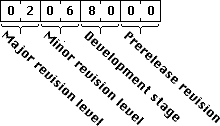

|
|
System 7.5.5 includes changes to the Virtual Memory Manager, some
substantial Code Fragment Manager improvements, and a variety of
enhancements and improvements. We recommend this update for all
Macintosh computers running System 7.5.3. System 7.5.5 will only
install on a Macintosh or Mac OS- compatible computer running some
version of System 7.5.3. If you are running an earlier version of
System Software, you need to upgrade to System 7.5.3 before you can
install System 7.5.5.
Updated: [Sep 01 1996]
|
About System 7.5.5 Features
Virtual Memory
We rewrote parts of the Virtual Memory Manager for all machines
that can support virtual memory. Performance using virtual memory
should be substantially improved. When compared to the currently
shipping virtual memory, when VM is turned on, the system boots up
faster, Power Macintosh applications launch faster, and QuickTime
movies play smoother. The following sections describe some of the
features of this new VM.
VM Performance Issues
We improved the page aging algorithm.
Every 8 page faults, we aged the physical RAM pages and
refilled the "victim" list consisting of the pages that are to be
replaced in the next 8 page faults. The function which did this
could take up to 46 ms to age 48 MB of RAM on a Power Macintosh
7500.
We replaced the algorithm used by this function with a much
simpler and faster algorithm. Worst case for the new algorithm is
about the same as the current algorithm because it only has to
look at every physical page about once. The pause every 8 page
faults is gone.
Pages are written to disk multiple times because the act of
writing a page to disk marks the virtual memory page dirty.
When a dirty logical page is replaced, a virtual memory
optimization finds up to 6 additional dirty pages contiguous in
the virtual memory backing store file, marks the pages clean, and
then writes them out to disk with a single write request. Since
it's likely that dirty logical pages close to a dirty logical page
will have a similar "age" and thus will likely be replaced in the
near future, too, this optimization will likely make future page
faults faster.
However, LockMemory marks all of the pages locked as dirty and
since LockMemory is called on pages written by DMA I/O devices,
the just-cleaned pages are dirtied when they are written. That
results in an I/O trace to the virtual memory backing store file
that can look something like "write 7 pages, read one page, write
7 pages, read one page " instead of the intended "write 7 pages,
read 1 page, read 1 page, read 1 page, read 1 page, read 1 page,
read 1 page, read 1 page, write 7 pages, read 1 page..."
New VM API call
A new API call, LockMemoryForOutput, has been added to the
_MemoryDispatch trap. This new routine works exactly like LockMemory
except that it does not dirty the locked pages. LockMemoryForOutput
is meant to be used for DMA operations that just read memory. DMA
operations that write to memory must use LockMemory to ensure that
the pages are marked dirty. LockMemoryForOutput is called through the
_MemoryDispatch trap using selector 10.
The following glue will be added to Memory.h for the new call:
/* Lock memory for output */
#pragma parameter __D0 LockMemoryForOutput(__A0, __S1)
extern pascal OSErr LockMemoryForOutput(void *address, unsigned long count)
TWOWORDINLINE(0x700A, 0xA05C);
|
Developers can determine if LockMemoryForOutput is available by
testing for the gestaltVMHasLockMemoryForOutput bit (bit 1) in the
gestaltVMAttr Gestalt selector. If bit 1 is set, LockMemoryForOutput
is available.
VM Bug Fixes
System stability improvements
We fixed several internal calls which had the potential of
hanging or crashing your machine when passed invalid arguments.
Because of a bug in VM, CFM could occasionally leave a file open
when it should not be left open. Several crashing conditions in
HoldMemory and LockMemory were repaired. Other fixes which had
previously been made in PowerPC VM were rolled into 68K VM as
well.
Added two new SysError values
If VM's deferred user function table ran out of entries, VM
would trash low memory starting at location 0. We now call
SysError with dsVMDeferredFuncTableFull (112) instead of trashing
memory off of a NULL pointer. You can get this error in several
ways. One way is to defer already-deferred i/o requests. Another
way is to install a Time Manager task which has already been
installed.
VM was ignoring all errors while reading or writing to the "VM
Storage" backing store file. If there was an error, the system
would likely crash later with a seemingly unrelated problem.
There's no way to continue or recover if this happens, so VM now
calls SysError with dsVMBadBackingStore (113) instead of
continuing on with a bad page or memory. This error can happen
whenever your backing store volume returns an error. Examples can
be genuine disk i/o errors, losing battery power on a
SCSI-disk-mode PowerBook, turning off an external hard disk which
contains your backing store, and so forth.
Calls which may be deferred to VM safe time
The following parts of the system are patched by virtual memory
so that they may possibly be deferred to VM safe time:
PostEvent
Time Manager tasks
Read, Write, Control, & Status driver calls
VBL tasks
Slot VBL tasks
ADBOp
SCSIDispatch
|
Inside Macintosh: Memory page 3-11 has a discussion of page
faults and deferring user code while the driver of the paging
device in busy. The list on page 3-12 is incomplete; the types of
code listed above are a more complete list, based on the current
VM sources.
VM now holds some stack for Control and Status calls
VM now holds 2K of stack for all _Control and _Status calls.
This 2K of stack was previously being held for _Read and _Write
calls.
These changes apply to all machines which can run virtual memory
(i.e., all machines except the Macintosh Plus, SE, Classic, LC,
Portable, PowerBook 100, or Macintosh II without a PMMU).
Code Fragment Manager
We now load libraries better in low memory situations when virtual
memory is off. This should help products which use a fair amount of
memory (e.g., multimedia games) on small memory configuration
entry-level Macintosh computers. In particular, a "private copy" of
the code for a shared library is now placed in the application heap
if there is sufficient room in the application heap, but there is no
room in temporary memory or the system heap. The Code Fragment
Manager will use no more than the difference between the minimum
memory partition size and the actual memory partition size for this
private copy.
We bypass the file system cache (using the technique documented in
Inside Macintosh: Files on page 2-95) when reading fragments in
memory. We use BlockMoveData in more places. These changes result in
faster application loading.
A possible confusing issue for developers is that the Code
Fragment Manager may return different error codes under System 7.5.5
than it did under System 7.5.3 or earlier, especially in the case of
a missing weakly imported library (called a soft import
in Inside Macintosh: PowerPC System Software.) The error code returned
will depend upon the options passed to GetSharedLibrary. In
particular the errors cfragNoLibraryErr (-2804) and cfragLibConnErr
(-2817) might be returned for very similar reasons. Developers should
treat these errors as interchangeable. You should check for the
existence of weakly imported symbol by using the code in Inside
Macintosh: PowerPC System Software on page 1-25, rather than by
calling GetSharedLibrary and depending upon a specific error code
being returned.
These changes apply to all PowerPC based Macintosh computers.
There are no changes to the 68K version of the Code Fragment Manager
in this release.
Modern Memory Manager
If an application tried to allocate a small negative amount of
memory it would crash with a type 11 error. Inside the Modern Memory
Manager, we changed a local variable from signed long to unsigned
long, and added checking for overflow from high positive numbers to
low negative ones. This affects all PowerPC Macintosh computers.
Background-Only Applications
If two (or more) background-only applications were running and
both called MaxApplZone, the system would hang, because the Process
Manager was not correctly saving and restoring the process state for
each application. (This is the bug documented in Technote PS 2,
"Background Only Applications.") This bug had existed since the
introduction of faceless background applications. We now correctly
save and restore the process state for each application. This affects
all machines.
Floppy disk insertion and asynchronous i/o bug
On a Macintosh 6100, 7100, or 8100 machine, when a floppy disk was
inserted and there was asynchronous file system activity going on,
the machine could hang. An internal routine was incorrect because the
ROM was finalized while some experimentation was going on with how
the file system works. Machines with later ROMs are fine. We patch
the 6100/7100/8100 ROM to bring this ROM family up to date. This only
affects these three classes of machine. It affects them at any clock
speed.
Floppy disk formatting
On fast processors (180 Mhz or better, 604e), floppy disk
formatting would sometimes fail because the code didn't wait long
enough to switch heads to the second side. This left the second side
unformatted. We changed the timing in the floppy disk formatting
routines for this case, and now format floppies correctly. Some
machines may have an extension called "PowerMac Format Patch" which
does the same thing. If System 7.5.5 installer detects this
extension, it should delete it. (The extension will not install its
code under System 7.5.5 or later.)
Emulator cache flush bug
If the emulator was requested to flush a non-existing memory
range, the emulator could get stuck in an infinite loop. We now check
the range to be flushed and exit if invalid memory is specified. This
fix affects the PowerBook 5300, 2300, and PCI-based desktop Macintosh
computers.
CalcCMask
When color searchprocs were used with CalcCMask the resulting bit
mask was randomly shifted to the left creating a jagged edge. This
shifting effect was caused by a logic error in an internal QuickDraw
macro. The macro returned incorrect mask values (0 / 0xFF instead of
0 / 1) to CalcCMask when the destination pixel depth was 1 bit.
File Manager flush bug
The File Manager was making a request to flush a non-existing
memory range. Because of the Emulator cache flush bug described
above, the emulator would get stuck in an infinite loop. We patch
_GetFPos, _SetFPos, and _Read to fix this problem. This fix affects
the PowerBook 5300, 2300, and PCI-based desktop Macintosh computers.
Infrared Remote
On machines which support Infrared Remote Control, there were two
problems which could arise. If the CPU was powered up using the
remote control, further remote control commands were ignored. If the
CPU was powered up normally via the keyboard, the remote control
commands would work correctly. However if the volume up or down
button was held down (causing repeated Infrared Remote commands) for
a sufficient length of time, infrared commands would stop working.
This was caused by a patch which wasn't getting installed under some
circumstances. This fix applies to all machines which support
Infrared Remote Control.
LocalTalk DMA
Fixes a potential data corruption problem when the Macintosh
5400/120 is configured as follows: as a server with multiple clients
connected, and simultaneously as an Apple Remote Access server with
at least one Apple Remote Access client connected and that client is
logged onto a server via Apple Remote Access. When lots of traffic
was being generated, the clients could experience data corruption
when copying files to or from the Macintosh 5400/120 server. We also
fixed a problem where LocalTalk DMA 1.0 would load on machines
without the proper hardware.
IR Talk
System 7.5.3 Revision 2 forgot to include the control panel and
driver for IR Talk, so a machine which shipped with System 7.5.3
installed and upgraded directly to System 7.5.3 Revision 2 did not
have the same IR Talk drivers as a machine which had System 7.5
Update 2.0 installed, or a machine which had System 7.5 Version 7.5.3
installed.
Ethernet on 5400/6400
On the Macintosh 5400 and 6400 models, the Ethernet support had a
bug which manifested itself on very busy Ethernets. These models
could have slow communications because of dropped packets. This was
due to an internal setting which gave higher priority to certain
kinds of packets. Now all packets have the same priority.
SCSI Manager
Added a call to LockMemoryForOutput() as described in the Virtual
Memory paragraph.
We changed the interrupt level at which SCSI completion routines
get executed from level 2 to level 1. Because the interrupt level was
at level 2 the SCSI completion routines slowed the performance of
expansion cards (such as video capture and sound cards) whose
interrupt level was also at level 2. This affects only PowerPC
machines running a native version of SCSI Manager 4.3.
We corrected several errors with the MESH SCSI Controller (found
on the desktop PowerPC Macintosh computers.) ACK could be released
before REQ. There was a disconnect/reconnect bug with reads on old
tape drives. We could misread interrupts from the MESH chip.
We fixed two bugs related to the internal SCSI bus on PCI Macs
with Fast SCSI. First, we could occasionally mishandle a reconnect if
it came in at precisely the same instant we were attempting a new
command on the bus. Second, there was a bug in the Mesh controller
which could cause it to give a command done interrupt before the
target had released REQ. On a fast machine it was possible to issue a
new command to the chip while REQ was still on the bus. The
controller interpreted this as a new byte and we transferred it
twice. This only happens on asynchronous in phases such as message
in, asynchronous data in or status phase. The usual result of this
bug was a hang. We now wait for REQ to be removed by the device
before issuing a new command to the chip.
Sharing printers
Under some conditions involving a blank name in Sharing Setup and
the use of shared printers, you could fail to print with a "Resource
Not Found" error. This was because System 7.5 Update 2.0 deleted the
blank Pascal string used by Sharing Setup. We reinstall the blank
user name string if it is missing. This would only affect some
Performa users and some users who had never set their user name, but
upgraded with System 7.5 Update 2.0.
PCI startup hang
On 180 Mhz and faster PCI Macs, there was a bug initializing the
PCI bridge chip. This made the PCI bus inaccessible during system
startup, resulting in a hang. We now initialize the PCI bridge chip
more reliably.
Interrupt Service Routines
If you exit an interrupt service routine at a lower interrupt
level than that set when you entered the routine, the interrupt level
isn't cleared properly, and you won't process any interrupts of lower
priority until an interrupt of the original priority or higher is
encountered. This affects PCI Macs and Macs with PowerPC upgrade
cards installed. The work around for developers is to ensure that you
exit any interrupt service routine at the same priority as that which
was set when you entered the routine. We fixed a Sound Manager
interrupt service routine which was doing this on desktop Macs with
PowerPC upgrade cards.
Control Panels and Shared Libraries
This was noticed during the testing of System 7.5.5. We discovered
a third party control panel which was linked with MathLib (probably
because it linked with CLib.) Because MathLib is also in ROM, space
was allocated for the MathLib globals twice. Because control panels
run in the Finder process space, the MathLib globals space was
allocated in the Finder's application heap, not in the system heap.
On most machines, the MathLibs globals allocated by the ROM
combined with the 22K of MathLib globals allocated by the linked
MathLib library are small enough to fit in the free and purgable
space left in the Finder's application heap. But on the PowerMac
7500/8500/9500, the MathLib globals allocated by the ROM are also
22K, and the combined 44K of MathLib globals uses all but a few bytes
of the Finder's application heap. This results in repeated "Out Of
Memory" warnings whenever you try to do anything in the Finder.
Back to top
Future System Software Support
With the release of System 7.5.5 Update, Apple is delivering its
final system software release for the Macintosh Plus, SE, Classic,
Portable, PowerBook 100, SE FDHD, SE/30, LC, II, IIx, and IIcx. These
computers were not designed to support 32-bit memory addressing.
Future Mac OS releases will require 32-bit memory addressing, which
is supported by all other Macintosh models.
Back to top
What Happened to 7.5.4?
System 7.5.4 was declared finished. Distribution to seed sites had
already begun. A problem was found which led to us halting
distribution and revising the product. Rather than having to struggle
with two versions of 7.5.4 and the resulting confusion this would
cause, we decided to revise the product version number to 7.5.5.
The differences between 7.5.4 and 7.5.5 are
- a revision to the IR Talk for the Macintosh 5400 and 6400
families
- we save the VM preferences and chosen desktop pattern when
installing on the Macintosh 5400 and 6400 families
- a minor revision of the Energy Saver control panel.
Back to top
Detecting System 7.5.5
To distinguish between the multiple versions of system software,
the 'sysu' Gestalt selector has been provided. It returns the version
number of the currently installed system update, formatted according
to the same conventions as the version numbering used in 'vers'
resources, as illustrated in Figure 1.

Figure 1. The format of the Gestalt response for the 'sysu' selector.
The presence of the 'sysu' Gestalt selector allows application
programs to determine if the current installed system software
version was established using the system update. The 'sysu' Gestalt
selector will only be defined if a system update package was used to
establish the current system version: the 'sysu' selector is not
defined on machines shipped with System 7.5.3 preinstalled, nor on
system software versions earlier than 7.5.3.
Using the 'sysv' and 'sysu' Gestalt Selectors
Here is how you can use the 'sysv' and the 'sysu' Gestalt
selectors to establish information about System 7.5.5:
long response, updateversion;
OSErr err;
Boolean seven_five_five;
Boolean is_an_update;
seven_five_five = false;
is_an_update = false;
err = Gestalt(gestaltSystemVersion, &response);
if (err == noErr) {
seven_five_five = (response == 0x00000755);
if (seven_five_five) {
err = Gestalt('sysu', &updateversion);
is_an_update = (err == noErr);
}
}
/* at this point, seven_five_five will be true if system 7.5.5
is the current operating system, and is_an_update will be true
if the current system version was established by update. if
is_an_update is true, updateversion will contain the System
update's version number (0x02068000 for 7.5.5). */
|
Back to top
Downloadables
|

|
Acrobat version of this Note (1248K).
|
Download
|
Back to top
|